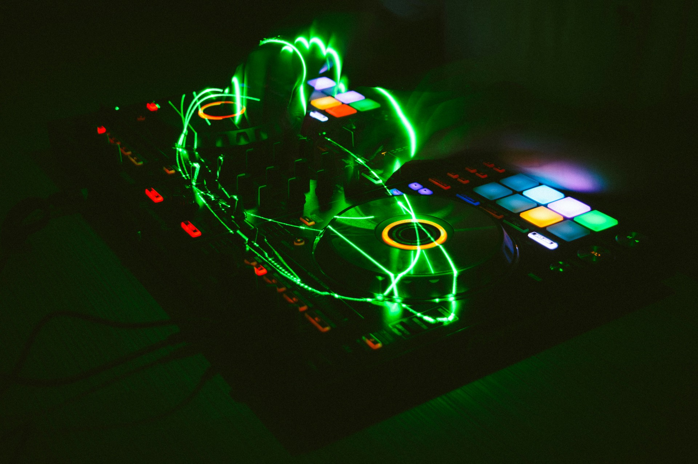

Wir zeigen nicht nur Clips. Wir zeigen, wie wir wirken.
Hier landet der Teil von uns, der sofort greift: TikTok-Teaser, Hook-Visuals, Couple-Momente, Mrs.-Gray-Praesenz, Dr.-Gray-Druck und Clips, die direkt zwischen Sound, Shop und Community vermitteln.
Aktuelle Video-Spots
Diese Auswahl kommt direkt aus unserem Material und zeigt genau die drei Bewegungen, die fuer uns online funktionieren: Live-Anker, Hook-Moment und visuelle Druckflaeche.
Live-Room Collage 2026
Neuer Batch-Clip aus eurem Setup: mehrere Perspektiven, direkter Chat-Vibe und eine klare Dr.-Gray-Live-Achse mit Druck.
Duo-Collage in Bewegung
Mehrere Momente in einem Clip: wir als Paar, wir im Setup, wir in Farbe. Genau dieser Mix passt zu Couple-Story, Szene und Community.
Crowd im Red Room
Echter Clubdruck aus eurem Upload-Batch: rote Flaeche, dichter Raum, klare Event-Wirkung. Genau das zahlt auf Booking und Glaubwuerdigkeit ein.
Content-Looks mit Wiedererkennung
Unsere Bildsprache soll nicht wie Stock oder DJ-Baukasten wirken. Wir setzen auf Duo-Spannung, dunkle Flaechen, starke Portraits und Bilder, die direkt nach uns aussehen.
Decks im Close-up
Neue Medienlinie aus dem Upload-Batch: technische Naehe, klare Farben und sofortige Club-Atmosphaere fuer eure Video-Hooks.

Laser und Kontrolle
Dunkel, technoid und direkt auf Wirkung gebaut. Dieser Look passt perfekt zu Dr.-Gray-Druck, Stage-Teasern und Booking-Kommunikation.

Mrs.-Gray-Presence
Das Portrait bringt genau die Richtung fuer die Damen-Linie: weiblich, selbstbewusst, serioes und visuell klar ohne Ueberladung.
Was das fuer uns bringt
Die Video-Seite ist jetzt mehr als Ablage. Sie zeigt unsere Hooks, unsere Wirkung und die Uebersetzung von Musik in Bild, Kommentar, Running Gag und spaeteren Merch-Claim.
Wie wir weiterziehen
Als Naechstes knuepfen wir hier Release-Teaser, Live-Ankuendigungen, Shop-Drops und spaeter echte TikTok-Einbettungen direkt an konkrete Clips und Hooks an.